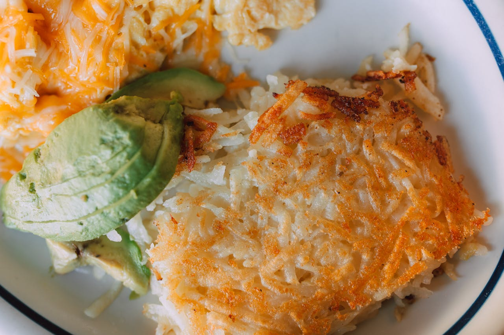

Delicious Hash Browns Recipe
Description
These homemade hash browns are crispy on the outside and tender on the inside — the perfect way to start your day. Made with just a few ingredients and a hot pan, they're simple to whip up and pair well with eggs, bacon, or anything you've got on the breakfast plate. Best served hot and fresh off the pan.
Ingredients
Basic Hash Browns:
- 2 large russet potatoes, peeled
- 1/2 small onion (optional)
- 2 tbsp vegetable oil or butter (for frying)
- Salt, to taste
- Black pepper, to taste
Hash Browns - Step-by-Step
-
Grate the potatoes:
- Use a box grater to shred the peeled potatoes (and onion if using).
- Place grated mixture in a bowl of cold water and let sit for a few minutes.
-
Rinse and drain:
- Drain the potatoes and rinse under cold water until the water runs clear.
- This removes excess starch and helps them crisp up.
-
Dry the potatoes:
- Place the grated potatoes in a clean towel and squeeze out as much moisture as possible.
- The drier they are, the crispier the result.
-
Cook the hash browns:
- Heat oil or butter in a non-stick skillet over medium-high heat.
- Spread the potatoes in a thin, even layer and press them down lightly.
- Let cook undisturbed for 4-5 minutes, until golden and crispy underneath.
- Flip and cook the other side for another 3-4 minutes until browned.
-
Season and serve:
- Sprinkle with salt and pepper to taste.
- Serve hot with eggs, toast, or your favorite breakfast sides.